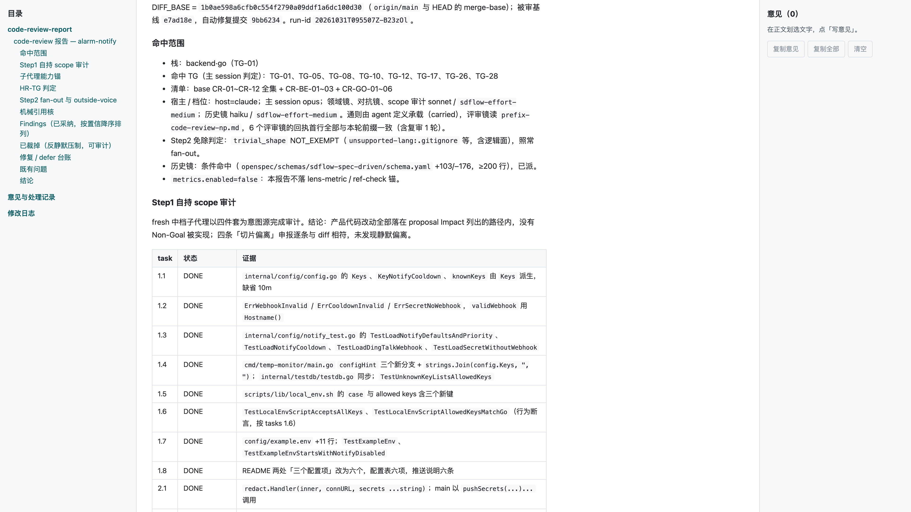

代码技术栈 → 选择所需清单
领域视角的清单 · 三层
Go
6 条
错误包装
Context 传播
Goroutine 生命周期
defer
类型断言
共享状态并发
React
7 条
ESP32
8 条
ML307C
7 条
后端
3 条
数据库操作
HTTP Handler
数据库竞态
前端
8 条
嵌入式
6 条
通用
12 条
错误处理
错误路径
空值
资源清理
并发与互斥
整数与类型转换
日志
魔法数字
测试质量
命令注入
枚举完备
测试被削弱
例：开头那次
一个改动
碰到
Go
前端
领域视角
领域视角
Go
后端
通用
前端
通用
通用 + 后端 + Go
通用 + 前端

实录 · 示例项目
栈：
backend·go
清单：base
CR-01~CR-12
全集
+
CR-BE-01~03
+
CR-GO-01~06
这次只有一个领域视角
每个 ticket 的双轴审也用这套清单
整体评审还要连起调用路径